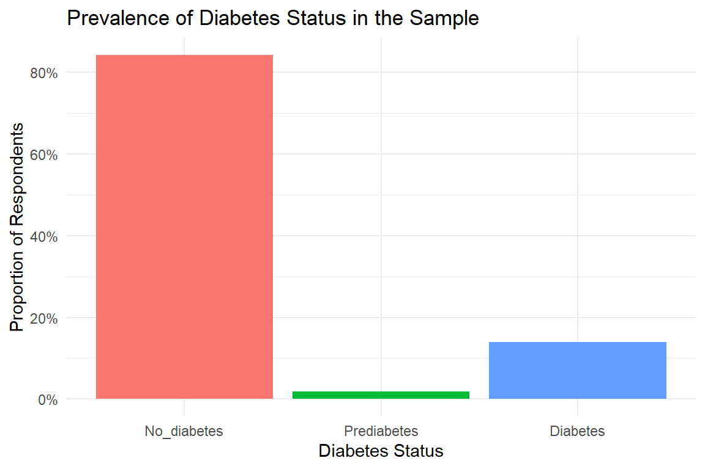
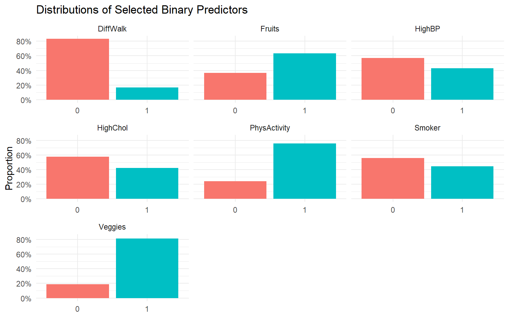
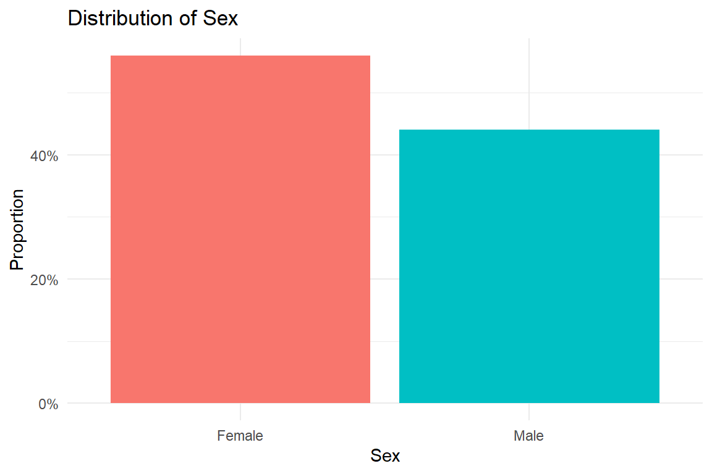
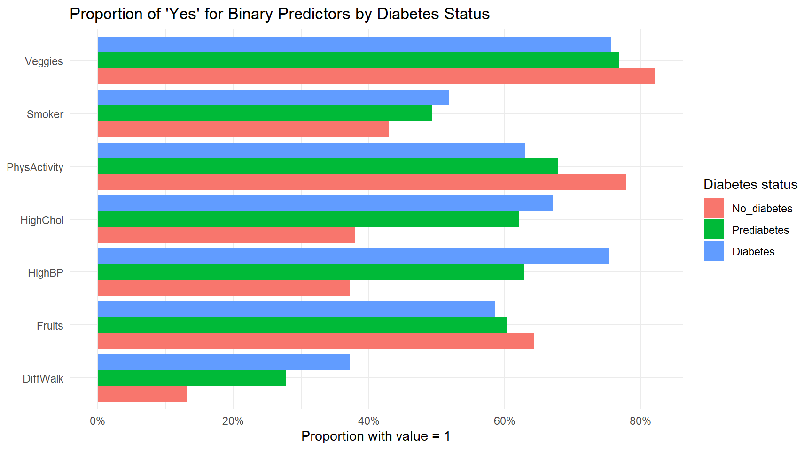
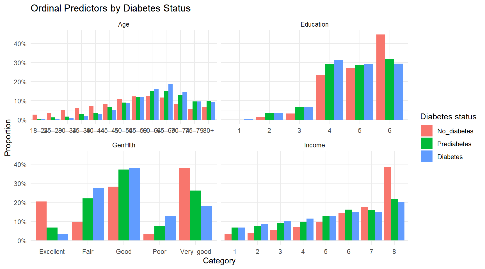
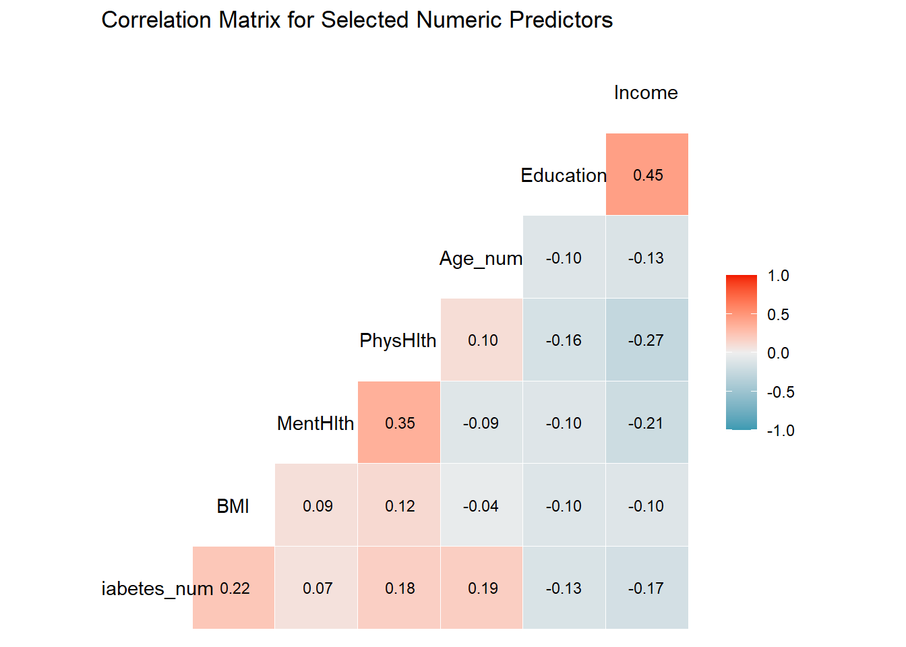

library(tidyverse)
library(lubridate)
library(janitor)
library(skimr)
library(GGally)
theme_set(theme_minimal())Diabetes Health Indicators – Exploratory Data Analysis
Introduction
The data analyzed in this report come from the Diabetes Health Indicators dataset
(diabetes_binary_health_indicators_BRFSS2015). Each row corresponds to a survey respondent and includes a diabetes status indicator (Diabetes_012), along with a variety of health and lifestyle indicators such as blood pressure, BMI, physical activity, smoking status, general health, and socio-demographic variables.
In this version of the dataset, the variable:
Diabetes_012is coded as:0= no diabetes1= prediabetes2= diabetes
Our goals in this EDA are to:
- Describe the variables that will be used in the subsequent modeling.
- Understand the distribution of the response variable (
Diabetes_012). - Explore how key predictors relate to diabetes status.
- Identify potential data quality issues (missing values, unusual distributions).
- Build intuition that will guide model selection in the Modeling document.
The ultimate goal is to build a predictive model related to diabetes status, which will be developed in the modeling page/report.
Load Packages
We begin by loading the R packages that will be used throughout the analysis.
Read and Prepare the Data
Next, we read the dataset from the data/ folder and perform some initial cleaning steps (I know from Kaggle this is the cleaned sample). We keep a numeric version of the diabetes indicator for correlations, create a factor version for plots/modeling, recode Sex as a labeled factor, and provide more interpretable labels for GenHlth and Age.
diabetes_raw <- readr::read_csv(
"data/diabetes_binary_health_indicators_BRFSS2015.csv"
)
age_labels <- c(
"18–24", "25–29", "30–34", "35–39",
"40–44", "45–49", "50–54", "55–59",
"60–64", "65–69", "70–74", "75–79", "80+"
)
diabetes <- diabetes_raw |>
mutate(
# numeric copy of the diabetes indicator
Diabetes_num = Diabetes_012,
# factor version for classification / plots
Diabetes_012 = factor(
Diabetes_012,
levels = c(0, 1, 2),
labels = c("No_diabetes", "Prediabetes", "Diabetes")
),
Sex = factor(
Sex,
levels = c(0, 1),
labels = c("Female", "Male")
),
GenHlth = factor(
GenHlth,
levels = 1:5,
labels = c("Excellent", "Very_good", "Good", "Fair", "Poor"),
ordered = TRUE
),
Age_num = Age,
Age = factor(
Age,
levels = 1:13,
labels = age_labels,
ordered = TRUE
)
)
diabetes# A tibble: 253,680 × 24
Diabetes_012 HighBP HighChol CholCheck BMI Smoker Stroke
<fct> <dbl> <dbl> <dbl> <dbl> <dbl> <dbl>
1 No_diabetes 1 1 1 40 1 0
2 No_diabetes 0 0 0 25 1 0
3 No_diabetes 1 1 1 28 0 0
4 No_diabetes 1 0 1 27 0 0
5 No_diabetes 1 1 1 24 0 0
6 No_diabetes 1 1 1 25 1 0
7 No_diabetes 1 0 1 30 1 0
8 No_diabetes 1 1 1 25 1 0
9 Diabetes 1 1 1 30 1 0
10 No_diabetes 0 0 1 24 0 0
# ℹ 253,670 more rows
# ℹ 17 more variables: HeartDiseaseorAttack <dbl>, PhysActivity <dbl>,
# Fruits <dbl>, Veggies <dbl>, HvyAlcoholConsump <dbl>, AnyHealthcare <dbl>,
# NoDocbcCost <dbl>, GenHlth <ord>, MentHlth <dbl>, PhysHlth <dbl>,
# DiffWalk <dbl>, Sex <fct>, Age <ord>, Education <dbl>, Income <dbl>,
# Diabetes_num <dbl>, Age_num <dbl>Basic Data Overview
We first report the number of observations and variables in the cleaned dataset.
n_obs <- nrow(diabetes)
n_vars <- ncol(diabetes)
tibble(
n_observations = n_obs,
n_variables = n_vars
)# A tibble: 1 × 2
n_observations n_variables
<int> <int>
1 253680 24We then use skimr::skim() to obtain a high-level summary of the distributions and types of all variables.
skimr::skim(diabetes)| Name | diabetes |
| Number of rows | 253680 |
| Number of columns | 24 |
| _______________________ | |
| Column type frequency: | |
| factor | 4 |
| numeric | 20 |
| ________________________ | |
| Group variables | None |
Variable type: factor
| skim_variable | n_missing | complete_rate | ordered | n_unique | top_counts |
|---|---|---|---|---|---|
| Diabetes_012 | 0 | 1 | FALSE | 3 | No_: 213703, Dia: 35346, Pre: 4631 |
| GenHlth | 0 | 1 | TRUE | 5 | Ver: 89084, Goo: 75646, Exc: 45299, Fai: 31570 |
| Sex | 0 | 1 | FALSE | 2 | Fem: 141974, Mal: 111706 |
| Age | 0 | 1 | TRUE | 13 | 60–: 33244, 65–: 32194, 55–: 30832, 50–: 26314 |
Variable type: numeric
| skim_variable | n_missing | complete_rate | mean | sd | p0 | p25 | p50 | p75 | p100 | hist |
|---|---|---|---|---|---|---|---|---|---|---|
| HighBP | 0 | 1 | 0.43 | 0.49 | 0 | 0 | 0 | 1 | 1 | ▇▁▁▁▆ |
| HighChol | 0 | 1 | 0.42 | 0.49 | 0 | 0 | 0 | 1 | 1 | ▇▁▁▁▆ |
| CholCheck | 0 | 1 | 0.96 | 0.19 | 0 | 1 | 1 | 1 | 1 | ▁▁▁▁▇ |
| BMI | 0 | 1 | 28.38 | 6.61 | 12 | 24 | 27 | 31 | 98 | ▇▅▁▁▁ |
| Smoker | 0 | 1 | 0.44 | 0.50 | 0 | 0 | 0 | 1 | 1 | ▇▁▁▁▆ |
| Stroke | 0 | 1 | 0.04 | 0.20 | 0 | 0 | 0 | 0 | 1 | ▇▁▁▁▁ |
| HeartDiseaseorAttack | 0 | 1 | 0.09 | 0.29 | 0 | 0 | 0 | 0 | 1 | ▇▁▁▁▁ |
| PhysActivity | 0 | 1 | 0.76 | 0.43 | 0 | 1 | 1 | 1 | 1 | ▂▁▁▁▇ |
| Fruits | 0 | 1 | 0.63 | 0.48 | 0 | 0 | 1 | 1 | 1 | ▅▁▁▁▇ |
| Veggies | 0 | 1 | 0.81 | 0.39 | 0 | 1 | 1 | 1 | 1 | ▂▁▁▁▇ |
| HvyAlcoholConsump | 0 | 1 | 0.06 | 0.23 | 0 | 0 | 0 | 0 | 1 | ▇▁▁▁▁ |
| AnyHealthcare | 0 | 1 | 0.95 | 0.22 | 0 | 1 | 1 | 1 | 1 | ▁▁▁▁▇ |
| NoDocbcCost | 0 | 1 | 0.08 | 0.28 | 0 | 0 | 0 | 0 | 1 | ▇▁▁▁▁ |
| MentHlth | 0 | 1 | 3.18 | 7.41 | 0 | 0 | 0 | 2 | 30 | ▇▁▁▁▁ |
| PhysHlth | 0 | 1 | 4.24 | 8.72 | 0 | 0 | 0 | 3 | 30 | ▇▁▁▁▁ |
| DiffWalk | 0 | 1 | 0.17 | 0.37 | 0 | 0 | 0 | 0 | 1 | ▇▁▁▁▂ |
| Education | 0 | 1 | 5.05 | 0.99 | 1 | 4 | 5 | 6 | 6 | ▁▁▅▅▇ |
| Income | 0 | 1 | 6.05 | 2.07 | 1 | 5 | 7 | 8 | 8 | ▁▁▃▂▇ |
| Diabetes_num | 0 | 1 | 0.30 | 0.70 | 0 | 0 | 0 | 0 | 2 | ▇▁▁▁▁ |
| Age_num | 0 | 1 | 8.03 | 3.05 | 1 | 6 | 8 | 10 | 13 | ▂▃▇▇▆ |
Variables of Interest
For this project, we focus on a subset of predictors that are both interpretable and likely to be informative for predicting diabetes status. Here we select these variables and inspect their structure.
vars_of_interest <- diabetes |>
select(
Diabetes_012,
HighBP, HighChol, CholCheck, BMI, Smoker, Stroke,
HeartDiseaseorAttack, PhysActivity, Fruits, Veggies,
HvyAlcoholConsump, AnyHealthcare, NoDocbcCost,
GenHlth, MentHlth, PhysHlth, DiffWalk,
Sex, Age, Age_num, Education, Income,
Diabetes_num
)
glimpse(vars_of_interest)Rows: 253,680
Columns: 24
$ Diabetes_012 <fct> No_diabetes, No_diabetes, No_diabetes, No_diabete…
$ HighBP <dbl> 1, 0, 1, 1, 1, 1, 1, 1, 1, 0, 0, 1, 0, 1, 0, 1, 1…
$ HighChol <dbl> 1, 0, 1, 0, 1, 1, 0, 1, 1, 0, 0, 1, 0, 1, 1, 0, 1…
$ CholCheck <dbl> 1, 0, 1, 1, 1, 1, 1, 1, 1, 1, 1, 1, 1, 1, 1, 1, 1…
$ BMI <dbl> 40, 25, 28, 27, 24, 25, 30, 25, 30, 24, 25, 34, 2…
$ Smoker <dbl> 1, 1, 0, 0, 0, 1, 1, 1, 1, 0, 1, 1, 1, 0, 1, 0, 0…
$ Stroke <dbl> 0, 0, 0, 0, 0, 0, 0, 0, 0, 0, 0, 0, 0, 0, 1, 0, 0…
$ HeartDiseaseorAttack <dbl> 0, 0, 0, 0, 0, 0, 0, 0, 1, 0, 0, 0, 0, 0, 0, 0, 0…
$ PhysActivity <dbl> 0, 1, 0, 1, 1, 1, 0, 1, 0, 0, 1, 0, 0, 0, 1, 1, 1…
$ Fruits <dbl> 0, 0, 1, 1, 1, 1, 0, 0, 1, 0, 1, 1, 0, 0, 0, 0, 1…
$ Veggies <dbl> 1, 0, 0, 1, 1, 1, 0, 1, 1, 1, 1, 1, 1, 1, 1, 0, 1…
$ HvyAlcoholConsump <dbl> 0, 0, 0, 0, 0, 0, 0, 0, 0, 0, 0, 0, 0, 0, 0, 0, 0…
$ AnyHealthcare <dbl> 1, 0, 1, 1, 1, 1, 1, 1, 1, 1, 1, 1, 1, 1, 1, 1, 1…
$ NoDocbcCost <dbl> 0, 1, 1, 0, 0, 0, 0, 0, 0, 0, 0, 0, 0, 0, 1, 0, 0…
$ GenHlth <ord> Poor, Good, Poor, Very_good, Very_good, Very_good…
$ MentHlth <dbl> 18, 0, 30, 0, 3, 0, 0, 0, 30, 0, 0, 0, 0, 0, 30, …
$ PhysHlth <dbl> 15, 0, 30, 0, 0, 2, 14, 0, 30, 0, 0, 30, 15, 0, 2…
$ DiffWalk <dbl> 1, 0, 1, 0, 0, 0, 0, 1, 1, 0, 0, 1, 0, 1, 0, 0, 0…
$ Sex <fct> Female, Female, Female, Female, Female, Male, Fem…
$ Age <ord> 60–64, 50–54, 60–64, 70–74, 70–74, 65–69, 60–64, …
$ Age_num <dbl> 9, 7, 9, 11, 11, 10, 9, 11, 9, 8, 13, 10, 7, 11, …
$ Education <dbl> 4, 6, 4, 3, 5, 6, 6, 4, 5, 4, 6, 5, 5, 4, 6, 6, 4…
$ Income <dbl> 3, 1, 8, 6, 4, 8, 7, 4, 1, 3, 8, 1, 7, 6, 2, 8, 3…
$ Diabetes_num <dbl> 0, 0, 0, 0, 0, 0, 0, 0, 2, 0, 2, 0, 0, 2, 0, 0, 0…Missing Data
Before proceeding with the analysis, we investigate the extent of missing data for each selected variable. First, we summarize the number and proportion of missing values by variable.
missing_summary <- vars_of_interest |>
select(-Diabetes_num, -Age_num) |>
summarise(across(everything(), ~ sum(is.na(.)))) |>
pivot_longer(everything(),
names_to = "variable",
values_to = "n_missing") |>
mutate(prop_missing = n_missing / n_obs)
missing_summary |>
arrange(desc(n_missing)) |>
head(10)# A tibble: 10 × 3
variable n_missing prop_missing
<chr> <int> <dbl>
1 Diabetes_012 0 0
2 HighBP 0 0
3 HighChol 0 0
4 CholCheck 0 0
5 BMI 0 0
6 Smoker 0 0
7 Stroke 0 0
8 HeartDiseaseorAttack 0 0
9 PhysActivity 0 0
10 Fruits 0 0We then visualize the proportion of missing values among variables that have at least one missing observation. If there are no missing values, we simply print a message indicating that the data are complete.
if (any(missing_summary$n_missing > 0)) {
missing_summary |>
filter(n_missing > 0) |>
ggplot(aes(x = reorder(variable, prop_missing),
y = prop_missing)) +
geom_col() +
coord_flip() +
scale_y_continuous(labels = scales::percent_format()) +
labs(
x = NULL,
y = "Proportion Missing",
title = "Proportion of Missing Values by Variable"
)
} else {
tibble(msg = "No missing values were found in the selected variables.") |>
knitr::kable()
}| msg |
|---|
| No missing values were found in the selected variables. |
This is the cleaned dataset explained in the Kaggle, so I was not expecting any missing value.
Distribution of the Response: Diabetes_012
We next examine the distribution of the diabetes status indicator to understand class balance across the three categories.
resp_counts <- vars_of_interest |>
count(Diabetes_012) |>
mutate(prop = n / sum(n))
resp_counts# A tibble: 3 × 3
Diabetes_012 n prop
<fct> <int> <dbl>
1 No_diabetes 213703 0.842
2 Prediabetes 4631 0.0183
3 Diabetes 35346 0.139 We visualize these proportions with a bar plot.
resp_counts |>
ggplot(aes(x = Diabetes_012, y = prop, fill = Diabetes_012)) +
geom_col(show.legend = FALSE) +
scale_y_continuous(labels = scales::percent_format()) +
labs(
x = "Diabetes Status",
y = "Proportion of Respondents",
title = "Prevalence of Diabetes Status in the Sample"
)
The dataset is imbalanced, with a smaller proportion of respondents labeled as diabetes compared to those without diabetes. Prediabetes appears as an intermediate category. This imbalance will be important to considerwhen evaluating models. This was mentioned in the Kaggle website
Univariate Distributions of Key Numeric Predictors
We begin by studying the distributions of some important numeric variables: BMI, days of poor mental health, and days of poor physical health.
vars_of_interest |>
select(BMI, MentHlth, PhysHlth) |>
pivot_longer(everything(), names_to = "variable", values_to = "value") |>
ggplot(aes(x = value)) +
geom_histogram(bins = 30) +
facet_wrap(~ variable, scales = "free_x") +
labs(
x = NULL,
y = "Count",
title = "Distributions of Selected Numeric Predictors"
)
BMI usually right-skewed, with most values in the 20–40 range. Mental and physical health days are often concentrated at 0, with a long right tail for respondents reporting many days of poor health.
Univariate Distributions of Key Binary/Categorical Predictors
Many predictors in this dataset are Dummy or 0/1 indicators. Here I examine the marginal distributions for a few key binary variables, followed by a separate summary of the sex variable.
cat_vars <- vars_of_interest |>
select(HighBP, HighChol, Smoker, PhysActivity,
Fruits, Veggies, DiffWalk)
cat_vars |>
pivot_longer(everything(),
names_to = "variable",
values_to = "value") |>
mutate(value = factor(value)) |>
group_by(variable, value) |>
summarise(n = n(), .groups = "drop") |>
group_by(variable) |>
mutate(prop = n / sum(n)) |>
ggplot(aes(x = value, y = prop, fill = value)) +
geom_col(show.legend = FALSE) +
facet_wrap(~ variable, scales = "free_x") +
scale_y_continuous(labels = scales::percent_format()) +
labs(
x = NULL,
y = "Proportion",
title = "Distributions of Selected Binary Predictors"
)
vars_of_interest |>
count(Sex) |>
mutate(prop = n / sum(n)) |>
ggplot(aes(x = Sex, y = prop, fill = Sex)) +
geom_col(show.legend = FALSE) +
scale_y_continuous(labels = scales::percent_format()) +
labs(
x = "Sex",
y = "Proportion",
title = "Distribution of Sex"
)
These plots show the prevalence of high blood pressure, high cholesterol, smoking, physical activity, difficulty walking, and sex in the sample.
Numeric Predictors vs. Diabetes Status
We now turn to bivariate relationships. First, we compare BMI, mental health days, and physical health days across diabetes status groups using boxplots.
vars_of_interest |>
select(Diabetes_012, BMI, MentHlth, PhysHlth) |>
pivot_longer(cols = c(BMI, MentHlth, PhysHlth),
names_to = "variable",
values_to = "value") |>
ggplot(aes(x = Diabetes_012, y = value, fill = Diabetes_012)) +
geom_boxplot(outlier.alpha = 0.2, show.legend = FALSE) +
facet_wrap(~ variable, scales = "free_y") +
labs(
x = "Diabetes Status",
y = NULL,
title = "Numeric Predictors by Diabetes Status"
)
Respondents with diabetes tend to have higher BMI and more days of poor physical health. Differences in mental health days may also be present but could be less pronounced.
Binary Predictors vs. Diabetes Status
For binary predictors, we compare the proportion of “1” (Yes) within each diabetes group.
binary_vars <- vars_of_interest |>
select(Diabetes_012,
HighBP, HighChol, Smoker, PhysActivity,
Fruits, Veggies, DiffWalk)
binary_long <- binary_vars |>
pivot_longer(
cols = -Diabetes_012,
names_to = "variable",
values_to = "value"
) |>
mutate(value = factor(value))
binary_long |>
group_by(Diabetes_012, variable) |>
summarise(prop_yes = mean(value == "1"), .groups = "drop") |>
ggplot(aes(x = variable, y = prop_yes,
fill = Diabetes_012)) +
geom_col(position = "dodge") +
coord_flip() +
scale_y_continuous(labels = scales::percent_format()) +
labs(
x = NULL,
y = "Proportion with value = 1",
fill = "Diabetes status",
title = "Proportion of 'Yes' for Binary Predictors by Diabetes Status"
)
Individuals with diabetes are more likely to report high blood pressure, high cholesterol, difficulty walking, and lower levels of physical activity. These patterns support the inclusion of these predictors in our models.
Ordinal Predictors vs. Diabetes Status
We now investigate how self-reported general health (GenHlth), age category, education, and income differ by diabetes status.
ordinal_vars <- vars_of_interest |>
select(Diabetes_012, GenHlth, Age, Education, Income) |>
# make all ordinal predictors character so pivot_longer is happy
mutate(across(c(GenHlth, Age, Education, Income), as.character))
ordinal_long <- ordinal_vars |>
pivot_longer(
cols = -Diabetes_012,
names_to = "variable",
values_to = "value"
)
ordinal_long |>
group_by(Diabetes_012, variable, value) |>
summarise(n = n(), .groups = "drop") |>
group_by(Diabetes_012, variable) |>
mutate(prop = n / sum(n)) |>
ggplot(aes(x = value, y = prop,
fill = Diabetes_012)) +
geom_col(position = "dodge") +
facet_wrap(~ variable, scales = "free_x") +
scale_y_continuous(labels = scales::percent_format()) +
labs(
x = "Category",
y = "Proportion",
fill = "Diabetes status",
title = "Ordinal Predictors by Diabetes Status"
)
Diabetes tends to be more prevalent in older age categories, among respondents with worse self-reported general health, and potentially among those with lower income and education levels. These patterns suggest that demographic and socio-economic variables may add predictive power.
Correlation Among Numeric Predictors
Finally, we examine the correlation structure among numeric predictors and the diabetes indicator (using the numeric version Diabetes_num and Age_num).
numeric_for_cor <- vars_of_interest |>
select(Diabetes_num, BMI, MentHlth, PhysHlth, Age_num, Education, Income)
cor_mat <- cor(numeric_for_cor, use = "pairwise.complete.obs")
round(cor_mat, 2) Diabetes_num BMI MentHlth PhysHlth Age_num Education Income
Diabetes_num 1.00 0.22 0.07 0.18 0.19 -0.13 -0.17
BMI 0.22 1.00 0.09 0.12 -0.04 -0.10 -0.10
MentHlth 0.07 0.09 1.00 0.35 -0.09 -0.10 -0.21
PhysHlth 0.18 0.12 0.35 1.00 0.10 -0.16 -0.27
Age_num 0.19 -0.04 -0.09 0.10 1.00 -0.10 -0.13
Education -0.13 -0.10 -0.10 -0.16 -0.10 1.00 0.45
Income -0.17 -0.10 -0.21 -0.27 -0.13 0.45 1.00We also visualize this correlation matrix using GGally::ggcorr().
ggcorr(
numeric_for_cor,
label = TRUE,
label_round = 2,
label_size = 3
) +
labs(
title = "Correlation Matrix for Selected Numeric Predictors"
)
The correlation matrix highlights the relationships among BMI, age, health days, and diabetes status. While no single predictor is perfectly correlated with diabetes, several variables show moderate associations that justify their inclusion in the modeling step.
Summary and Next Steps
In this EDA, we:
- Described the structure of the Diabetes Health Indicators dataset.
- Explored the marginal distribution of the multi-level diabetes indicator (
Diabetes_012). - Examined key numeric, binary, and ordinal predictors and their relationships with diabetes status.
- Identified variables that appear strongly associated with diabetes, including high blood pressure, high cholesterol, BMI, physical activity, difficulty walking, and general health, as well as age and income.
These insights will guide the construction of predictive models in the next stage, where we will fit and compare a classification tree and a random forest using the tidymodels framework, with model performance evaluated via log-loss on a held-out test set.